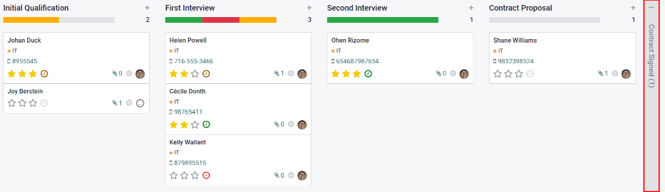
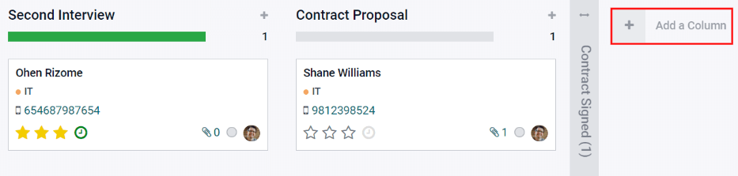
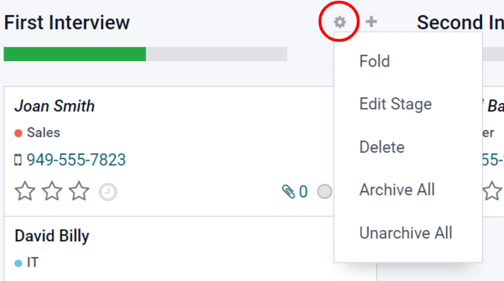
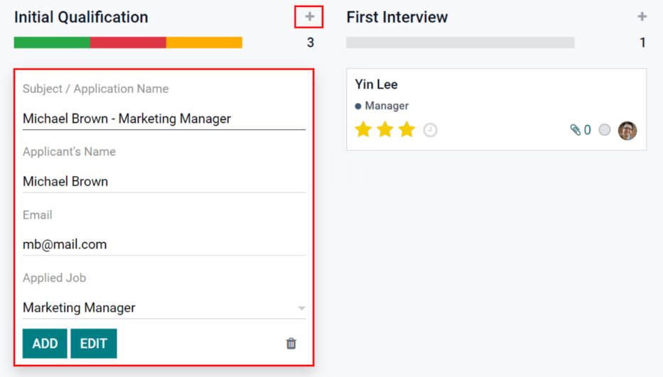
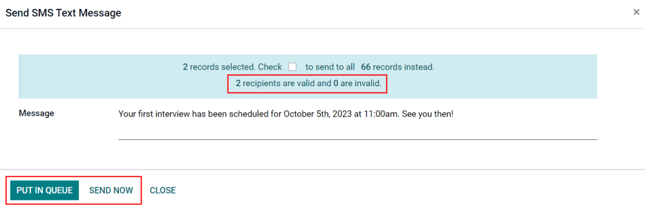

Reclutamiento¶
Odoo permite mantener organizados a todas las personas que solicitan algún empleo gracias a una serie preconfigurada de pasos y etapas por las que deben atravesar. Cada etapa cuenta con pasos específicos, por ejemplo, programar una llamada telefónica, realizar una entrevista y enviar una oferta laboral, por mencionar algunos. A este proceso se conoce como el «flujo de postulantes».
Cuando alguien aplica a un puesto de trabajo se crea una tarjeta de postulante de forma automática en la aplicación Reclutamiento de Odoo para ese puesto en específico. Conforme el postulante avanza en el proceso de reclutamiento, el equipo de reclutamiento mueve su tarjeta de una etapa a la siguiente.
Es posible configurar las etapas para enviar un correo electrónico de forma automática con una plantilla preconfigurada tan pronto como la tarjeta de un postulante ingresa a una etapa. Deberá definir estos correos electrónicos automáticos en cada etapa del flujo de postulantes.
El flujo de postulantes que se explica en este documento es el flujo predeterminado en Odoo y se utiliza con la configuración predeterminada de la aplicación Reclutamiento. Es posible modificar el flujo de postulantes para que se adapte al flujo de reclutamiento específico de cualquier empresa.
Nota
El flujo de postulantes con todas sus etapas es general y es útil para todos los puestos de trabajo, a menos que especifique lo contrario. Es posible configurar una etapa específica para su uso en un puesto específico, es decir, esa etapa solo será visible en ese puesto de trabajo en particular. De lo contrario, si crea una nueva etapa o modifica una existente, esos cambios serán visibles en todos los puestos de trabajo.
Vista de kanban¶
Para acceder a la vista de kanban de un puesto de trabajo vaya al tablero principal de la aplicación , es la vista predeterminada al abrir la aplicación y todos los puestos de trabajo aparecerán allí. Haga clic en el botón inteligente Nuevas postulaciones en la tarjeta de un puesto para navegar a la vista de kanban de todos los postulantes para ese puesto en particular.

En la solicitud de empleo aparecen las etapas de kanban con todos los solicitantes ubicados en sus respectivas columnas relacionadas con su etapa actual. Hay cinco etapas predeterminadas en Odoo:
La última columna, Contrato firmado, está plegada de forma predeterminada, aparece en gris y los postulantes en ella están ocultos de la vista. Para abrir la etapa plegada y visualizar las tarjetas de los postulantes de esa columna, haga clic en cualquier lugar de la delgada columna gris con el nombre de la etapa y la columna se expandirá.
Cada etapa tiene una barra de colores debajo de su nombre, esta proporciona información sobre el estado de los postulantes en la etapa. Los colores son los siguientes:
Verde: hay postulantes en la etapa con una actividad que ya está programada o que debe programarse para después (por ejemplo, una llamada telefónica o una entrevista) según los parámetros para esa etapa en particular.
Amarillo: hay postulantes en la etapa con una actividad programada para hoy o por programar hoy.
Rojo: hay postulantes en la etapa para los que debe programar las actividades atrasadas.
Gris: no hay actividades programadas por el momento, no hay futuras actividades que deba programar o no hay postulantes en la etapa.
Personalizar etapas¶
Las etapas pueden ser modificadas, agregadas o eliminadas para que se adapten mejor a las necesidades específicas de los pasos de contratación de una empresa.
Nueva etapa¶
Para crear una nueva etapa, haga clic en + Agregar una columna, aparecerá una nueva columna, escriba el título de la nueva etapa en el campo Título de la columna y luego haga clic en Agregar. La nueva columna aparecerá y estará disponible para crear otra nueva etapa. Si no necesita nuevas etapas, haga clic en cualquier lugar de la pantalla para salir.
Modificar etapa¶
Para modificar los ajustes de una etapa coloque el cursor sobre el nombre de la etapa, aparecerá un icono ⚙️ (engranaje) en la parte superior derecha de la etapa, haga clic en él para abrir un menú. Luego, haga clic en la opción Editar etapa, aparecerá el formulario Editar columna. Realice las modificaciones necesarias en el formulario y haga clic en Guardar cuando haya terminado.
Formulario de edición de columnas¶
El formulario Editar columna es donde se configuran los ajustes de la etapa. Los únicos campos obligatorios son el nombre de la etapa y la sección Información sobre herramientas.
Los campos a completar o modificar son los siguientes:
Nombre de la etapa: escriba un nombre para la etapa.
Plantilla de correo electrónico: seleccione una plantilla de correo electrónico de la lista desplegable. Si selecciona una plantilla, se enviará un correo electrónico con la plantilla seleccionada al candidato cuando su tarjeta ingrese a la etapa.
Plegado en kanban: seleccione la casilla para que la etapa aparezca plegada (es decir, oculta) en todo momento en la vista predeterminada.
Etapa de contratado: seleccione la casilla si esta etapa indica que el postulante ha sido contratado. Cuando la tarjeta del postulante entra a esta etapa, en la tarjeta aparece el texto Contratado en la esquina superior derecha. Si esta casilla está seleccionada, esta etapa se utiliza para determinar la fecha de contratación.
Específico de un puesto: si la etapa solo aplica a un puesto de trabajo en específico, seleccione el o los que apliquen con el menú desplegable. Puede seleccionar varios puestos.
Mostrar en Referencias: seleccione la casilla si esta etapa debe aparecer en la aplicación Referencias y permitir que una persona acumule puntos cuando uno de sus referidos llegue a esta etapa. En ese caso, aparecerá el campo de Puntos en donde deberá ingresar el número de puntos que el empleado recibirá cuando un postulante llegue a esta etapa.
Sección de Información sobre herramientas: hay tres etiquetas preconfiguradas (círculos de colores) para la tarjeta de cada postulante e indican su estado. Estos colores aparecen en la parte superior de cada etapa para indicar el estado de los solicitantes en la etapa. Es posible modificar los nombres de la etiqueta, pero la etiqueta no (es decir, el color). De forma predeterminada, los nombres y etiquetas son: En progreso (gris), Bloqueado (rojo) y Listo para la siguiente etapa (verde).
Requisitos: escriba cualquier nota interna para esta etapa que ayude a explicar cualquier requisito.
Eliminar etapa¶
Es posible eliminar una etapa en caso de que ya no sea necesaria. Coloque el cursor sobre el nombre de la etapa, aparecerá el icono ⚙️ (engranaje). Primero, haga clic en ⚙️ (engranaje) para abrir el menú y luego seleccione Eliminar. Aparecerá una advertencia con el mensaje ¿Está seguro de que desea eliminar esta columna?, haga clic en De acuerdo.
Importante
Si en ese momento aún hay postulantes en la etapa que está eliminando, aparecerá un error cuando intente hacerlo. Allí se le explicará que hay registros en la etapa que deberá eliminar, archivar o mover a una etapa distinta antes de eliminarla.
Plantillas de correo electrónico¶
Odoo tiene varias plantillas de correo electrónico preconfiguradas que puede utilizar para comunicarse con el postulante. A continuación podrá encontrar las plantillas de correo electrónico preconfiguradas y su momento de uso:
Postulante: confirmación de postulación: esta plantilla se utiliza para hacerle saber al postulante que su solicitud ha sido recibida. Este correo electrónico se envía de forma automática una vez que el postulante está en la etapa de Primera entrevista.
Postulante: interés: esta plantilla se utiliza para hacerle saber al postulante que pasó la etapa de Calificación inicial y que se le contactará para programar una entrevista con el reclutador.
Postulante: ya no le interesa: esta plantilla se utiliza cuando un postulante le hace saber que ya no le interesa el puesto, les agradece por su tiempo y consideración.
Postulante: rechazo: esta plantilla se utiliza cuando ya no se toma en cuenta a un postulante para el puesto.
Postulante: su paquete salarial: esta plantilla se utiliza cuando le ofrece un puesto a un postulante y le hace saber que puede configurar su paquete salarial.
Nota
Es posible crear, modificar y eliminar plantillas de correo electrónico para adaptarlas a las necesidades de una empresa. Para obtener más información sobre las plantillas de correo electrónico, consulte el documento relacionado con las Plantillas de correo electrónico.
Haga clic en Enviar mensaje en el chatter para enviar un correo electrónico de forma manual. Aparecerá un cuadro de texto junto con la dirección de correo electrónico del postulante, allí haga clic en el icono ⤢ (flecha doble) ubicado en la esquina inferior derecha de la pestaña Enviar mensaje en el chatter.

Aparecerá un nuevo cuadro para redactar un correo electrónico con los campos Destinatarios y Asunto completados. La dirección de correo electrónico del postulante estará en la línea de Destinatarios y el Asunto será Re: (Asunto / Nombre del postulante). De forma predeterminada el mensaje del correo electrónico estará vacío.
Para utilizar una plantilla de correo electrónico preconfigurada haga clic en el menú desplegable junto al campo Cargar plantilla ubicado en la parte inferior derecha de la ventana. Las plantillas de correo electrónico preconfiguradas pueden incluir marcadores de posición dinámicos para agregar información única al correo electrónico, así el postulante recibirá un mensaje más personalizado. Puede elegir entre varias plantillas de correo electrónico preconfiguradas y, según la que seleccione, el asunto o el cuerpo del correo electrónico pueden cambiar.
Nota
Solo se cargarán las plantillas de correo electrónico configuradas para el modelo. Hay otras plantillas de correo electrónico preconfiguradas en Odoo, pero si no están configuradas para la aplicación Reclutamiento, no aparecerán en la lista de plantillas disponibles.
Si es necesario agregar archivos adjuntos haga clic en el botón Adjuntar un archivo ubicado en la esquina inferior izquierda. Vaya al archivo a adjuntar y luego haga clic en Abrir. Para eliminar un archivo adjunto, haga clic en el icono X (Eliminar) ubicado a la derecha del archivo. Si necesita modificar el correo, edite el contenido. Si debe guardar los cambios para su uso posterior, guarde el correo electrónico como una nueva plantilla, solo haga clic en el botón Guardar como nueva plantilla ubicado en la esquina inferior derecha. Para enviar el correo electrónico, haga clic en Enviar y el correo electrónico se enviará al postulante. El correo electrónico aparecerá en el chatter.
Flujo de las etapas¶
Para mover la tarjeta del postulante de una etapa a otra puede arrastrarla de la vista kanban y soltarla en la etapa deseada, también puede modificar la etapa desde la tarjeta del postulante.
Para cambiar la etapa en la tarjeta del postulante, haga clic en ella desde la vista de kanban para ir a una vista detallada de la tarjeta. La etapa actual de la tarjeta aparece en morado en la parte superior, sobre la tarjeta. Solo haga clic en la etapa deseada para la tarjeta y la etapa cambiará. Una nota de registro que indica el cambio de etapa aparecerá en el chatter. Para regresar a la vista de kanban haga clic en Postulaciones en el menú de migas de pan en la parte superior izquierda, la tarjeta del postulante ahora aparecerá en la nueva etapa.

Calificación inicial¶
Importante
La siguiente información toma como referencia ¿ el flujo de trabajo predeterminado de la aplicación Reclutamiento de Odoo. Tenga en cuenta que si realiza modificaciones para crear un flujo de trabajo personalizado, será distinto a lo que se indica a continuación.
Todos los postulantes aparecen en la etapa de Calificación inicial, ya sea que hayan enviado su solicitud en línea o si el reclutador les ingresó de forma manual. Al crear la tarjeta del postulante, Odoo en automático completa su nombre, dirección de correo electrónico y número telefónico en la tarjeta. Esta información es obligatoria al solicitar un puesto de trabajo.
Si el postulante agregó información a la sección Breve introducción de la solicitud en línea, esta aparecerá en la pestaña Resumen de la postulación ubicada en la parte inferior de la tarjeta del postulante. Si la solicitud en línea incluye un currículum adjunto, aparecerá en la sección de archivos adjuntos del registro y también se almacena en la aplicación Documentos. Para encontrar los documentos de Reclutamiento almacenados en la aplicación Documentos, vaya al tablero principal de y haga clic en la carpeta etiquetada con Reclutamiento en el lado derecho. Todos los documentos de reclutamiento se almacenarán en esa carpeta.
Enviar entrevista¶
Es posible enviar una entrevista al postulante en cualquier momento del proceso de contratación para obtener más información. Estas entrevistas son personalizadas y pueden tener distintos formatos.
Odoo utiliza el término entrevista pero pueden ser cuestionarios, encuestas, pruebas, certificaciones, entre otras cosas. Las entrevistas personalizadas pueden tener el formato que mejor se adapte a las necesidades de cada puesto en particular. Por ejemplo, un puesto para un programador podría tener una entrevista que corresponda a una prueba de programación para determinar el nivel de habilidad del postulante. Un puesto de trabajo para un mesero podría tener un cuestionario que pregunte sobre la disponibilidad del postulante y debe estar disponible los fines de semana por la noche. Para obtener más información sobre la creación y edición de formularios de entrevistas, consulte la documentación sobre Puestos de trabajo.
Nota
La tarjeta del postulante debe tener una dirección de correo electrónico para que pueda recibir un mensaje. Si no tiene una, al hacer clic en Enviar entrevista aparecerá la tarjeta del postulante en lugar de la ventana emergente Encuesta. Escriba la dirección de correo electrónico en el campo correspondiente y luego haga clic en Guardar. Una vez que guarde la tarjeta, se cerrará y aparecerá la ventana emergente Encuesta.
Para enviar una entrevista a un postulante, haga clic en su tarjeta para ir a una vista detallada y, en la parte superior, haga clic en el botón con el texto Enviar entrevista.
Si la tarjeta del postulante tiene una dirección de correo electrónico registrada, aparecerá la ventana emergente Encuesta con toda la información completa. Si no hay un correo electrónico, entonces aparecerá el formulario de contacto. Escriba la dirección de correo electrónico del postulante y luego haga clic en Guardar. La tarjeta se cerrará y aparecerá la ventana emergente de Encuesta.
En Odoo, a los formularios de entrevista se les conoce como encuestas. Estas plantillas de correo electrónico también utilizan marcadores de posición dinámicos para personalizar el correo electrónico al solicitante y el puesto de trabajo. Agregue cualquier destinatario adicional a la encuesta en caso de que otras personas deban recibirla. Si un correo electrónico está en la base de datos como contacto, agréguelo en la línea Destinatarios. Si debe enviar un correo electrónico a alguien que no forma parte de los contactos de la base de datos y no desea agregarle, entonces escriba su correo en la línea Correos electrónicos adicionales.
Si necesita agregar archivos adjuntos, haga clic en el botón Archivos adjuntos y aparecerá una ventana para buscar archivos. Seleccione el archivo deseado y haga clic en Abrir para adjuntarlo al correo electrónico. El archivo adjunto se cargará y se enlistará arriba del botón Archivos adjuntos.
Si la entrevista enviada por correo electrónico debe completarse antes de una fecha en específico, seleccione una fecha límite para responder en la zona inferior derecha de la ventana emergente. Si hace clic en la línea ubicada junto a Fecha límite para responder, aparecerá un selector de calendario. Utilice las flechas < (izquierda) y > (derecha) en cada lado junto al mes para llegar hasta el mes deseado y luego haga clic en día para seleccionar la fecha.
El campo Plantilla de correo se completa según la configuración de la entrevista. Puede seleccionar una plantilla diferente desde el menú desplegable si así lo desea. Si selecciona una plantilla nueva, la plantilla nueva de correo se cargará en el cuerpo del correo.
Para enviar un correo con el enlace de la entrevista para el aplicante, haga clic en Enviar en la parte inferior de la ventana emergente del correo.

Rechazar¶
Puede rechazar a un candidato en cualquier momento del proceso de selección. Para rechazar a un candidato, haga clic en la tarjeta del candidato para acceder a una vista detallada de la misma. En la parte superior de la tarjeta hay varios botones; haga clic en el botón Rechazar.
Aparecerá la ventana emergente Motivo de rechazo. Seleccione el motivo de rechazo del menú desplegable. Los motivos de rechazo predeterminados en Odoo son: No cumple con los requisitos para el empleo, El solicitante ya no está interesado y El solicitante recibió una mejor oferta. Estos tres motivos de rechazo tienen plantillas de correo electrónico preconfiguradas asociadas. Puede crear motivos de rechazo adicionales y modificar o eliminar los que ya existen. Para agregar un nuevo motivo de rechazo, escriba el nombre del motivo y haga clic en Crear y editar…, aparecerá la ventana emergente Crear: Motivo de rechazo. Escriba el nombre de la nueva plantilla de correo en el campo Plantilla de correo electrónico y haga clic en Crear y editar…. Aparecerá la ventana emergente de Crear: Plantilla de correo electrónico, configúrela y luego haga clic en Guardar.
Nota
En Odoo, las plantillas de correo electrónico preconfiguradas a veces usan marcadores de posición dinámicos, es decir, piezas personalizadas de datos que completan contenido dinámico. Por ejemplo, si el nombre del postulante es una pieza de contenido dinámico, su nombre aparecerá cada que aparezca ese marcador de posición dinámico en la plantilla de correo electrónico. Consulte la documentación sobre las Plantillas de correo electrónico para obtener información más detallada.
Una plantilla de correo electrónico completa el campo Plantilla de correo después de seleccionar un motivo de rechazo. Si no es necesario que el solicitante reciba un correo electrónico, desmarque la casilla Enviar correo electrónico. Para visualizar la plantilla de correo electrónico, haga clic en el icono Enlace externo ubicado a la derecha de la plantilla de correo electrónico seleccionada. La plantilla de correo electrónico aparecerá en la ventana emergente y puede modificarla si es necesario. Luego de realizar los cambios, haga clic en Guardar. Para cerrar la plantilla de correo electrónico, haga clic en Descartar.
Para enviar un correo de rechazo al postulante, haga clic en Enviar. El correo se enviará al postulante y aparecerá un listón con el título Rechazado en el cuadro del empleado.

Después del rechazo, ya no podrá ver el cuadro del empleado en la vista Kanban del puesto de trabajo. Para ver los candidatos rechazados, vaya a . Todas las postulaciones para todos los puestos de trabajo se presentan en una vista de lista. Para ver solo los candidatos rechazados, haga clic en Filtros y después en Archivados/Rechazados; todos los candidatos que se han archivado o rechazado aparecerán en la lista. Para organizar aún más esta lista y ver los rechazos por puesto de trabajo, haga clic en ≣ Agrupar por y después en Puesto de trabajo.
Nuevo postulante¶
Puede agregar un recuadro de postulante de forma manual si es necesario. Si necesita agregar a un postulante a la lista de candidatos, pero no se ha creado un cuadro de postulante (no han aplicado al trabajo en línea) puede agregar un cuadro de postulante sin problemas desde el puesto de trabajo en la vista kanban de dos maneras, con el icono Agregar rápidamente o el botón Crear.
Añadido rápido¶
Añada rápidamente un nuevo candidato utilizando el icono Agregar rápidamente. Si aún no se encuentra en la vista kanban del puesto, vaya al panel principal de contratación y haga clic en el botón Nuevos candidatos del cuadro del puesto al que desea añadir al candidato. Después, haga clic en el pequeño icono + (signo de más) Agregar rápidamente en la parte superior derecha de la etapa Calificación inicial para añadir rápidamente un nuevo candidato.
Ingrese la información siguiente en el cuadro:
Asunto/Nombre de la postulación: este es el único campo requerido donde tiene que ingresar el título de la tarjeta. Usualmente será el nombre del postulante y el puesto de trabajo que les interesa, por ejemplo:
Laura Smith - Desarrollador. Este campo no es visible en la vista kanban (a no ser que esté en modo desarrollador), pero sí es visible en la tarjeta individual.Nombre del postulante: ingrese el nombre del postulante.
Correo: ingrese la dirección de correo del postulante.
Trabajo solicitado: este campo se completa con el puesto de trabajo actual. Si es necesario, el puesto de trabajo puede cambiarse seleccionando un puesto diferente en el menú desplegable. Si se selecciona un puesto de trabajo diferente, una vez creada la tarjeta, esta aparecerá en el puesto de trabajo seleccionado.
Después de ingresar la información, haga clic en Agregar. El postulante aparecerá en la lista, así como una tarjeta de postulante nueva en blanco. Haga clic ya sea en el icono 🗑️ (borrar) o en cualquier otra parte de la pantalla para cerrar.
Si lo prefiere, después de introducir el nombre del postulante, haga clic en Editar y se cargará un Formulario del postulante detallado. Introduzca la información en el formulario y haga clic en Guardar.
Crear¶
Para agregar un nuevo candidato con la información necesaria, haga clic en Crear. Si aún no se encuentra en la vista Kanban del puesto de trabajo al que desea añadir un candidato, vaya al panel principal de contratación y haga clic en el botón Nuevos candidatos de la ficha del puesto de trabajo al que desea añadir el candidato. Después, haga clic en el botón Crear en la parte superior izquierda de la vista kanban y se cargará un formulario de candidato.
Es posible que algunos campos en la información del candidato se llenen de forma automática dependiendo de cómo haya configurado e puesto de trabajo. Normalmente, tanto la sección Trabajo como el campo Reclutador se llenan de forma automática.
Ingrese la siguiente información en el formulario del candidato. Tome en cuenta que no todos los campos que se enlistan a continuación serán visibles, esto depende de las aplicaciones y configuraciones que haya realizado.
Sección del candidato¶
Asunto/Nombre de la postulación: este es el único campo requerido donde tiene que ingresar el título de la tarjeta. Usualmente será el nombre del postulante y el puesto de trabajo que les interesa, por ejemplo:
Laura Smith - Desarrollador. Este campo no es visible en la vista kanban a no ser que se deje en blanco el campo Nombre del postulante. En este caso, se mostrará el Asunto/Nombre de la postulación en la vista kanban.Nombre del postulante: ingrese el nombre del postulante.
Correo: ingrese la dirección de correo del postulante.
Teléfono: ingrese el número telefónico del aplicante.
Celular: ingrese el número de teléfono celular del aplicante.
Título: seleccione el nivel de estudios más alto del candidato en el menú desplegable. Las opciones son Egresado, Licenciatura, Maestría o Doctorado. La opción Egresado indica el nivel de estudios más alto anterior a la licenciatura, como el bachillerato o la educación secundaria, dependiendo del país.
Etiquetas: seleccione todas las etiquetas que quiera del menú desplegable. Si quiere agregar una etiqueta que no existe, ingrese el nombre de la etiqueta y haga clic en Crear una nueva etiqueta.
Entrevistador: seleccione la persona que realizará la(s) entrevista(s) en el menú desplegable. La persona debe tener derechos de reclutador u encargado configurados para la aplicación Reclutamiento para que aparezca en el menú desplegable.
Reclutador: seleccione a la persona responsable de todo el proceso de contratación para el puesto de trabajo. Solo se podrán seleccionar usuarios del menú desplegable que se le mostrará.
Apreciación: haga clic en una de las estrellas para seleccionar una calificación para el solicitante. Una estrella indica Bien, dos estrellas indican Muy bien y tres estrellas indican Excelente.
Referido por usuario: si se van a ganar puntos de referencia para este puesto de trabajo en la aplicación Referencias, seleccione el usuario que ha referido al candidato en el menú desplegable. La aplicación Referencias debe estar instalada para que esto aparezca.
Sección de trabajo¶
Los siguientes campos se rellenan automáticamente al crear un nuevo candidato, siempre que estén especificados en el puesto de trabajo. Puede editar los campos cuando quiera.
Trabajo solicitado: seleccione desde el menú desplegable el puesto de trabajo al cual el candidato se está postulando.
Departamento: seleccione el departamento al que pertenece el puesto de trabajo en el menú desplegable.
Empresa: seleccione en el menú desplegable la empresa correspondiente al trabajo.
Sección del contrato¶
Salario esperado: introduzca en este campo la cantidad que el candidato solicita para el puesto. El número debe tener el formato
XX,XXX.XX. La moneda se determina según la configuración de localización de la empresa.Salario esperado por el candidato, con ventajas adicionales…: si el candidato solicita alguna ventaja adicional, introdúzcala en este campo. Debe ser breve y descriptivo, como
1 semana adicional de vacacionesoplan dental.Salario propuesto: introduzca en este campo la cantidad que se ofrecerá al candidato para el puesto. La cifra debe tener el formato
XX,XXX.XX.Salario propuesto por la empresa, con ventajas adicionales…: las ventajas adicionales que se le ofrecen al candidato, introdúzcala en este campo. Debe ser breve y descriptivo, como
1 semana adicional de vacacionesoplan dental.Disponibilidad: utilizando el módulo de calendario del menú desplegable, seleccione la fecha de inicio disponible para el candidato.
Pestaña de resumen de la postulación¶
Todos los detalles o notas adicionales que se deberían agregar a la tarjeta del postulante se deben escribir en este campo.

Primera entrevista¶
Después de que un candidato haya superado la etapa Calificación inicial, puede pasar a la etapa Primera entrevista en la vista kanban del puesto de trabajo. Para mover al candidato a la siguiente etapa, arrastre y suelte la tarjeta del candidato a la etapa Primera entrevista, o haga clic en el botón Primera entrevista situado en la parte superior de la tarjeta del candidato.

Cuando la tarjeta del candidato pasa a la fase Primera entrevista, se envía automáticamente un correo electrónico de confirmación al solicitante. El correo electrónico se crea utilizando una plantilla de correo electrónico titulada Reclutamiento: reconocimiento de postulación. Esta plantilla ya está configurada en Odoo, y contiene marcadores de posición dinámicos para el puesto de trabajo, el nombre del reclutador, y la información de la empresa. Una vez que el correo se envíe, aparecerá en el chat.
Agendar una reunión¶
Cuando se haya acordado una fecha y hora tanto para el candidato como para el entrevistador, se podrá programar la entrevista. Para programar una entrevista, ya sea telefónica o en persona, haga clic en el botón inteligente Reunión situado en la parte superior del registro del candidato.
Para encontrar la información del candidato vaya al tablero de la aplicación , haga clic en el botón Nuevas postulaciones en la tarjeta del puesto de trabajo y después haga clic en la información del postulante.
Nota
El botón inteligente de reunión mostrará Sin reuniones si no hay reuniones programadas. Esto aparecerá de forma predeterminada para los nuevos postulantes que acaban de llegar a la etapa Primera entrevista. Si ya hay reuniones programadas, aparecerá el botón inteligente Próxima reunión con la fecha de la siguiente reunión.
Al hacerlo, se carga la aplicación Calendario, que muestra las reuniones y eventos actualmente programados para el usuario. Las reuniones y eventos mostrados corresponden a los empleados que aparecen en la sección Asistentes de la parte derecha de la vista del calendario. Para cambiar las reuniones y eventos que se muestran actualmente, desmarque la casilla de la persona cuyos eventos de calendario desea ocultar. En el calendario solo podrá ver los asistentes marcados.
La vista predeterminada es la vista de semana. Para cambiar la vista del calendario, haga clic en un botón para presentar el calendario en una vista diferente, ya sea Día, Mes o Año. Para cambiar el intervalo de fechas que aparece en el calendario utilice los botones ⬅️ (Izquierda), ➡️ (Derecha) u Hoy que se encuentran arriba del calendario o haga clic en una fecha del calendario a la derecha del calendario mostrado.

Para agregar una reunión al calendario, haga clic en el día en el que ocurrirá o haga clic en la hora de inicio de la reunión y arrastre hasta la hora de finalización, para seleccionar su fecha, hora y duración. Si el calendario muestra la vista de día o semana, haga clic en el día y el espacio en el que se llevará a cabo la reunión. Aparecerá una ventana emergente de Nuevo evento, con el campo Asunto de la reunión completo con el Asunto / Nombre del candidato. La duración predeterminada de una reunión es de 30 minutos. Si la información es correcta, haga clic en Nuevo para agregar la reunión al calendario o haga clic en Editar para modificarla.
Si hace clic en Editar aparecerá una tarjeta de Nuevo evento, allí podrá realizar los cambios necesarios.
Tarjeta de nuevo evento¶
Los campos que puede llenar o modificar en Nuevo evento son los que se mencionarán a continuación. Los únicos campos obligatorios son Asunto de la reunión, Comienza el y Termina a las. Una vez que ingrese los detalles de la tarjeta, haga clic en Guardar para guardar los cambios y crear la junta.
Asunto de la reunión: ingrese de qué se tratará la reunión. Debe indicar el propósito de la reunión claramente; el asunto automático es el Asunto/Nombre de la postulación en la tarjeta del empleado.
Asistentes: seleccione las personas que deben asistir, la persona que cree la reunión se agregará de forma automática. Puede agregar el numero de personas que quiera.
Pestaña de detalles de la reunión¶
Comienza el: seleccione la fecha y la hora en la que empezará la junta con el calendario desplegable.
Termina a las: seleccione la fecha y la hora en la que terminará la junta con el calendario desplegable.
Duración: este campo se llena de forma automática dependiendo de lo que haya puesto en Empieza el y Termina a las. Si ajusta el tiempo de la junta, el campo también se ajustará de forma automática para corregir la duración.
Todo el día: si la reunión dura todo el día, marque la casilla junto a Todo el día. Una vez marcada esta casilla, el campo Duración queda oculto, al igual que las horas de inicio y finalización de la reunión.
Organizador: en este campo aparece el empleado que creó la reunión. Utilice el menú desplegable para cambiar el empleado seleccionado.
Descripción: introduzca una breve descripción en este campo. Existe la opción de introducir texto con formato, como listas numeradas, encabezados, tablas, enlaces, fotos, etc. solo escriba
/, y se le presentarán una lista de opciones. Desplácese por las opciones y haga clic en el elemento desead, que aparecerá en el cuadro de texto y podrá modificar. Cada comando presenta una ventana emergente diferente. Siga las instrucciones de cada comando para completar la edición.Recordatorios: seleccione un recordatorio del menú desplegable. Las opciones incluyen Notificación, Correo electrónico y Mensaje de texto SMS, cada una con un periodo específico antes del evento (horas, días, etc.). El recordatorio que elija alertará a los participantes de la reunión a través de esa opción.
Ubicación: proporcione la ubicación de la reunión.
URL de la reunión: escriba el enlace a la reunión en este campo si se trata de una reunión virtual.
Etiquetas: seleccione las etiquetas para la reunión en el menú desplegable o escriba una nueva. Puede seleccionar la cantidad de etiquetas que desee.
Pestaña de opciones¶
Recurrente: si la reunión debe repetirse en un intervalo seleccionado (lo cual no es usual para una primera entrevista), marque la casilla junto a Recurrente. Aparecerá una sección de repetición donde deberá introducir los detalles sobre la frecuencia con la que debe repetirse la reunión, incluyendo la hora de finalización.
Privacidad: seleccione la visibilidad de esta reunión. Las opciones son Pública, Privada y Solo usuarios internos. Pública permite que todo el mundo vea la reunión, Privada permite que solo la vean los asistentes incluidos y Solo usuarios internos permite que la vea cualquier persona que haya iniciado sesión en la base de datos de la empresa.
Mostrar como: seleccione en el menú desplegable si la hora de la reunión debe aparecer como Ocupado o Disponible en las agendas de los asistentes. Establecer este campo como Disponible permite programar otras reuniones a la misma hora. Se recomienda establecer este campo como Ocupado, para que no se puedan programar otras reuniones para los asistentes a la misma hora.

Enviar la reunión a los asistentes¶
Una vez que ingrese los cambios y que los detalles de la junta estén correctos, puede enviar la junta a los asistentes mediante un correo o mensaje de texto.
Para enviar la reunión por correo electrónico, haga clic en el botón Correo ubicado junto a la lista de asistentes. Aparecerá la ventana emergente del configurador de correo electrónico Contactar a los asistentes y la plantilla predeterminada Calendario: actualización de evento aparecerá en el cuerpo del correo. Los destinatarios predeterminados son los seguidores del documento (solicitud de empleo) y el usuario que creó la reunión. Agregue la dirección de correo electrónico del postulante a la lista para que también reciba el correo. Realice cualquier otra modificación en el correo electrónico. Si necesita adjuntar un archivo, haga clic en el botón Adjuntar un archivo, diríjase al archivo y haga clic en Abrir. Haga clic en Enviar una vez que haya terminado de redactar el mensaje.

Para enviar la reunión por mensaje de texto, haga clic en el botón SMS situado junto a la lista de asistentes. Aparecerá una ventana emergente Enviar mensaje de texto SMS. En la parte superior, en un cuadro azul, aparece información relacionada al mensaje. La primera línea indica el número de registros (números de teléfono) seleccionados. La segunda línea indica el número de destinatarios y cuántos de ellos no son válidos. Si un contacto no tiene un número de teléfono válido en la lista, haga clic en Cerrar, edite el registro del asistente y vuelva a realizar estos pasos.
Advertencia
No recomendamos seleccionar la casilla para enviar a todos los registros en la ventana emergente Enviar mensaje de texto SMS, pues enviaría un mensaje a todos los contactos con un número de teléfono válido.
Cuando aparezca el mensaje 0 no son válidos, escriba el mensaje que desea enviar en el campo Mensaje. Debajo del campo de mensaje, aparece el número de caracteres, así como la cantidad de mensajes de texto necesarios para enviar el mensaje (según los criterios GSM7). Haga clic en Poner en la cola para que el texto se envíe más tarde, después de programar otros mensajes, o haga clic en Enviar ahora para enviar el mensaje inmediatamente.
Nota
El envío de mensajes de texto no es una función predeterminada en Odoo. Para enviar mensajes de texto necesita créditos y debe comprarlos. Para obtener más información sobre los créditos y planes de IAP, consulte Compras dentro de la aplicación (IAP).
Segunda entrevista¶
Después de que un candidato haya superado la etapa Primera entrevista, puede pasar a la etapa Segunda entrevista. Para mover al candidato a la siguiente etapa, arrastre y suelte la tarjeta del candidato a la etapa Segunda entrevista, o haga clic en el botón Segunda entrevista situado en la parte superior de la tarjeta del candidato.
Cuando la tarjeta del candidato pasa a la etapa Segunda entrevista, no hay actividades automáticas ni correos electrónicos configurados para esta etapa, a diferencia de la etapa Primera entrevista. El reclutador puede ahora programar una segunda entrevista con el candidato, siguiendo el mismo proceso que para la primera entrevista.
Propuesta de contrato¶
Cuando un candidato pasa las etapas de una entrevista y ya se les puede enviar una oferta, pueden pasar a la etapa Propuesta de contrato. Arrastre y suelte la tarjeta del candidato a la etapa Propuesta de contrato o haga clic en el botón Propuesta de contrato en la parte superior derecha del formulario del candidato.
El siguiente paso es enviar una oferta al candidato En la tarjeta del candidato, haga clic en el botón Generar oferta. Aparecerá una ventana emergente Generar un enlace de simulación. Todos los campos se rellenan previamente con la información del puesto de trabajo, excepto los campos Forzar nueva lista de vehículos, Vehículo predeterminado, y el campo :guilabel:Costo comedor` (éste se establece en 0.00).
Nota
Es posible que no todos los campos aparezcan en la ventana emergente Generar un enlace de simulación, dependiendo de la configuración de localización de la empresa y de las aplicaciones instaladas. Por ejemplo, si la aplicación Flota no está instalada, los campos relacionados con los vehículos no aparecerán en la ventana emergente.
Campos universales¶
Los siguientes campos aparecen para todas las ofertas que se envíen a los candidatos, sin importar los ajustes de localización.
Plantilla de oferta: la plantilla que se utiliza en la ventana emergente Generar un enlace de simulación. Para modificar la plantilla, haga clic en el icono Enlace externo situado a la derecha de la flecha desplegable. Realice los cambios necesarios y haga clic en Guardar.
Puesto de trabajo: el nombre del puesto que se le está ofreciendo al candidato.
Fecha de inicio del contrato: fecha en la que entra en vigor el contrato, que será la fecha actual en automático. Para modificar la fecha, haga clic en el menú desplegable para mostrar un calendario. Utilice las flechas < (izquierda) y > (derecha) situadas a ambos lados del mes para navegar hasta el mes deseado y, a continuación, haga clic en día para seleccionar la fecha.
Costo anual: el salario anual que se está ofreciendo.
Enlace de oferta: este enlace lleva al candidato a una página web donde puede introducir su información personal, que se importará a su ficha de empleado cuando se cree. Si procede, el candidato puede modificar su paquete salarial (esta opción no está disponible para todas las localizaciones). Por último, aquí es donde el candidato acepta la oferta haciendo clic en Revisión del contrato y firma para aceptar el contrato y firmarlo utilizando la aplicación Firmar.
Nota
La aplicación Firma debe instalarse para que se pueda firmar el documento.
Campos opcionales¶
Los siguientes campos sólo aparecerán si se seleccionan determinados ajustes de localización o se instalan determinadas aplicaciones. Por ejemplo, si la aplicación Flota no está instalada, no aparecerá ninguno de los campos opcionales relacionados con los vehículos, como Forzar nueva lista de vehículos o Vehículo predeterminado.
Puesto de trabajo: el nombre oficial del trabajo que se le ofreció al postulante, de la tarjeta Puesto de trabajo. Para modificar el nombre, haga clic en el icono Enlace externo situado a la derecha de la flecha desplegable. Realice los cambios necesarios y haga clic en Guardar.
Departamento: el departamento al que pertenece el puesto de trabajo. Para modificarlo, haga clic en el icono Enlace externo situado a la derecha de la flecha desplegable. Realice los cambios necesarios y haga clic en Guardar.
Forzar nueva lista de vehículos: marque esta caja para ofrecerle un nuevo vehículo al postulante.
Vehículo predeterminado: en el menú desplegable seleccione el vehículo que se le asignará al candidato.
Costo de la cafetería: ingrese la cantidad que el candidato tendría que pagar por la cafetería.
Tipo de contrato: en el menú desplegable seleccione el tipo de contrato que se le está ofreciendo.

Enviar oferta¶
Para enviar la oferta al candidato, haga clic en Enviar. Si el candidato no tiene una dirección de correo electrónico registrada, aparecerá el formulario de candidato para que pueda configurarla. Si ya hay un correo electrónico configurado, aparecerá la ventana emergente de correo electrónico. Si obtiene la tarjeta del solicitante, introduzca la dirección de correo electrónico del solicitante en el campo Correo electrónico y haga clic en Guardar. El formulario de candidato se cierra y aparece la ventana emergente de correo electrónico.
La plantilla de correo electrónico que se usa es Candidato: su paquete salarial y el campo Destinatarios, Asunto y el cuerpo del correo se llenan según la plantilla del correo. Si necesita añadir algún archivo adjunto, haga clic en el botón Archivos adjuntos y aparecerá una ventana del explorador de archivos. Navegue hasta el archivo deseado y haga clic en Abrir para adjuntarlo al correo electrónico. El archivo adjunto se cargará y aparecerá encima del botón Archivos adjuntos. Cuando el mensaje esté listo para enviarse, pulse Enviar.
Nota
Asegúrese de que la aplicación Firma electrónica está instalada para enviar una oferta. Es necesaria para que el reclutador pueda enviar la oferta al candidato. El candidato no necesita contar con algún software instalado.
Contrato firmado¶
Una vez que el candidato acepte la oferta y firme el contrato, el siguiente paso es moverlo a la fase Contrato firmado. Para mover al candidato a la siguiente fase, arrastre y suelte la tarjeta del candidato a la fase Contrato firmado, o haga clic en el botón Más en la parte superior del formulario del candidato para mostrar el botón de la fase Contrato firmado en la parte superior y haga clic en Contrato firmado.
Puede arrastrar el formulario del candidato a la etapa Contrato firmado aunque esta no esté desplegada en la vista Kanban.
Cuando arrastre al candidato a la etapa Contrato firmado, aparecerá un listón verde que dice Contratado en la esquina superior derecha de la tarjeta.

Crear empleado¶
El siguiente paso es crear un registro de empleado para el candidato que acaba de contratar. En la tarjeta del candidato, haga clic en el botón Crear empleado en la parte superior izquierda. Aparecerá un formulario de empleado, y cualquier información de la tarjeta del candidato que pueda importarse a la tarjeta del empleado, aparecerá en el formulario.
Rellene el resto del formulario. Para obtener información detallada sobre los campos, consulte la documentación Crear un nuevo empleado. Cuando haya terminado, haga clic en Guardar. El registro del empleado se guardará en la aplicación Empleados.